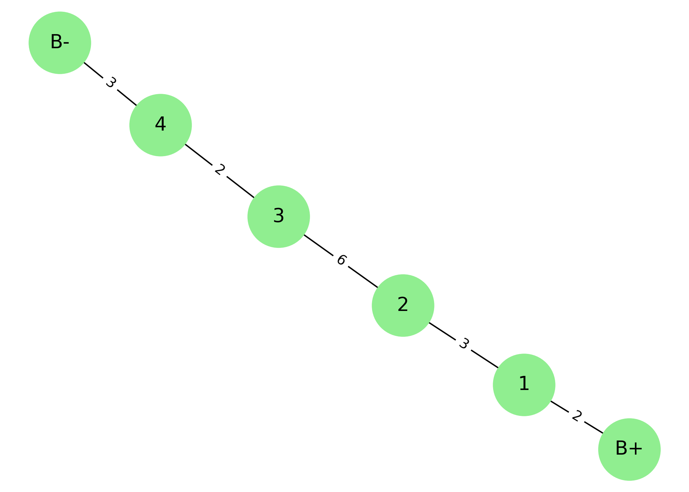
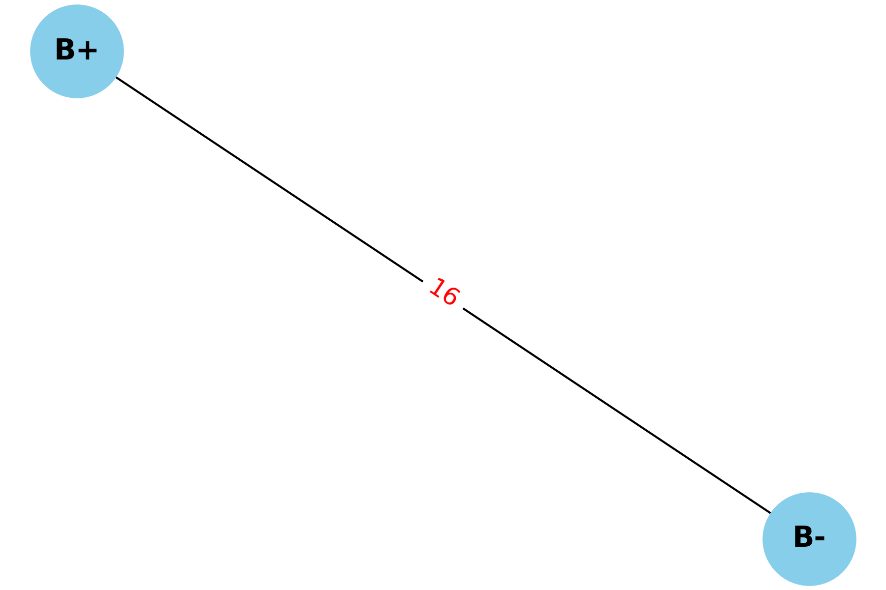
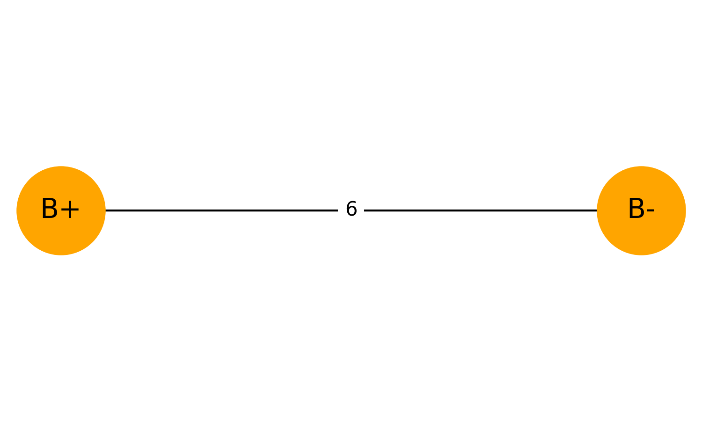
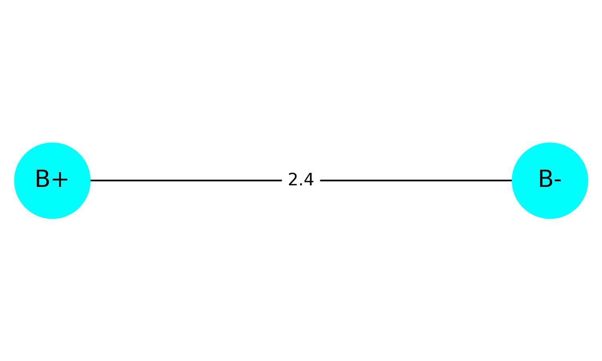

Problem 1: Equivalent Resistance Using Graph Theory
🔍 Motivation
Calculating equivalent resistance is a fundamental problem in electrical circuits, essential for understanding and designing efficient systems.
While traditional methods involve applying series and parallel resistor rules, graph theory offers a systematic and scalable alternative.
By modeling a circuit as a graph, where:
- Nodes represent junctions
- Edges represent resistors (with weights = resistance)
we can simplify the network using automation.
🎯 Task
This script:
- Accepts a circuit as a graph
- Detects and reduces series connections
- Detects and reduces parallel connections
- Outputs the final equivalent resistance
🔌 Example Circuit
Circuit layout:
B+ ── R1 ── R2 ── R3 ── R4 ── R5 ── B−
Each resistor has:
- R1 = 2 Ω
- R2 = 3 Ω
- R3 = 6 Ω
- R4 = 2 Ω
- R5 = 3 Ω
# STEP 1: Install NetworkX (only needed once in Colab)
!pip install networkx
# STEP 2: Import libraries
import networkx as nx
import matplotlib.pyplot as plt
# === ORIGINAL CIRCUIT ===
original = nx.MultiGraph()
original.add_edge("B+", "1", resistance=2)
original.add_edge("1", "2", resistance=3)
original.add_edge("2", "3", resistance=6)
original.add_edge("3", "4", resistance=2)
original.add_edge("4", "B-", resistance=3)
# Draw original circuit
pos1 = nx.spring_layout(original, seed=42)
plt.figure(figsize=(7, 5))
nx.draw(original, pos1, with_labels=True, node_color='lightgreen', node_size=2000, font_size=14)
labels1 = nx.get_edge_attributes(original, 'resistance')
nx.draw_networkx_edge_labels(original, pos1, edge_labels=labels1, font_color='black')
plt.title("Original Circuit: B+ to B- with R1 to R5")
plt.tight_layout()
plt.savefig("original_circuit.png", dpi=300)
plt.show()
# === COPY original to a new graph to simplify ===
G = original.copy()
# Simplify series connections
def simplify_series(G):
changed = True
while changed:
changed = False
for node in list(G.nodes()):
if G.degree[node] == 2 and node not in ["B+", "B-"]:
neighbors = list(G.neighbors(node))
if len(neighbors) == 2:
u, v = neighbors
R1 = G[u][node][0]['resistance']
R2 = G[node][v][0]['resistance']
G.remove_edge(u, node)
G.remove_edge(node, v)
G.remove_node(node)
G.add_edge(u, v, resistance=R1 + R2)
print(f"✔️ Combined series: {u}-{node}-{v} → {u}-{v} with R = {R1 + R2}")
changed = True
break
# Simplify parallel connections
def simplify_parallel(G):
for u, v in list(G.edges()):
edge_data = list(G.get_edge_data(u, v).items())
if len(edge_data) > 1:
R1 = edge_data[0][1]['resistance']
R2 = edge_data[1][1]['resistance']
G.remove_edge(u, v, key=edge_data[0][0])
G.remove_edge(u, v, key=edge_data[1][0])
if R1 + R2 != 0:
R_eq = (R1 * R2) / (R1 + R2)
G.add_edge(u, v, resistance=R_eq)
print(f"⚡ Combined parallel: {u}={v} → 1 edge with R = {R_eq:.2f}")
else:
print(f"⚠️ Cannot reduce {u}-{v}: R1 + R2 = 0")
# Run simplification
print("\n🔧 Before simplification:")
print(list(G.edges(data=True)))
simplify_series(G)
simplify_parallel(G)
print("\n✅ After simplification:")
print(list(G.edges(data=True)))
# Draw simplified circuit
pos2 = nx.spring_layout(G, seed=42)
plt.figure(figsize=(6, 4))
nx.draw(G, pos2, with_labels=True, node_color='skyblue', node_size=2000, font_size=14, font_weight='bold')
labels2 = nx.get_edge_attributes(G, 'resistance')
nx.draw_networkx_edge_labels(G, pos2, edge_labels=labels2, font_color='red', font_size=12)
plt.title("Simplified Circuit: Equivalent Resistance")
plt.tight_layout()
plt.savefig("simplified_circuit.png", dpi=300)
plt.show()
🔧 Original Circuit Output

✅ Simplified Circuit Output

🧪 Bonus Test Case: Parallel Resistors
This test case demonstrates how the algorithm handles parallel connections between two resistors.
Circuit layout:
┌──── R1 = 4Ω ─────┐
B+───┤ ├─── B−
└──── R2 = 6Ω ─────┘
Expected equivalent resistance:
🔢 Code
import networkx as nx
import matplotlib.pyplot as plt
# Create graph with parallel resistors
G_parallel = nx.MultiGraph()
G_parallel.add_edge("B+", "B-", resistance=4) # R1
G_parallel.add_edge("B+", "B-", resistance=6) # R2
# Visualize original parallel circuit
pos_p = {"B+": (0, 0), "B-": (1, 0)}
plt.figure(figsize=(5, 3))
nx.draw(G_parallel, pos_p, with_labels=True, node_color='orange', node_size=2000, font_size=14)
labels = nx.get_edge_attributes(G_parallel, 'resistance')
nx.draw_networkx_edge_labels(G_parallel, pos_p, edge_labels=labels)
plt.title("Parallel Circuit: R1 = 4Ω, R2 = 6Ω")
plt.tight_layout()
plt.savefig("parallel_original.png", dpi=300)
plt.show()
# Simplify parallel connection
def simplify_parallel(G):
for u, v in list(G.edges()):
edge_data = list(G.get_edge_data(u, v).items())
if len(edge_data) > 1:
R1 = edge_data[0][1]['resistance']
R2 = edge_data[1][1]['resistance']
G.remove_edge(u, v, key=edge_data[0][0])
G.remove_edge(u, v, key=edge_data[1][0])
R_eq = (R1 * R2) / (R1 + R2)
G.add_edge(u, v, resistance=R_eq)
print(f"⚡ Parallel reduced: {u}–{v} → R = {R_eq:.2f} Ω")
simplify_parallel(G_parallel)
# Visualize simplified version
plt.figure(figsize=(5, 3))
nx.draw(G_parallel, pos_p, with_labels=True, node_color='cyan', node_size=2000, font_size=14)
labels = nx.get_edge_attributes(G_parallel, 'resistance')
nx.draw_networkx_edge_labels(G_parallel, pos_p, edge_labels=labels)
plt.title("Simplified Parallel Circuit")
plt.tight_layout()
plt.savefig("parallel_simplified.png", dpi=300)
plt.show()
🖼 Bonus Circuit Preview
🔶 Before:

🔷 After:

📦 Deliverables
- A complete Python implementation of a resistor-simplification algorithm using graph theory
- Visual diagrams showing:
- The original circuit as a graph
- The simplified result after series/parallel reductions
- Markdown documentation explaining:
- How the algorithm works
- An example input and output
- Two generated output images:
original_circuit.pngsimplified_circuit.png
🧩 Conclusion
This project demonstrates how graph theory provides an elegant and automated way to compute equivalent resistance in electrical circuits.
By modeling resistors as weighted edges in a graph, we can use simple algorithmic logic to reduce both series and parallel combinations.
The simulation confirmed that: - The method works for basic and moderately complex circuits - It outputs consistent results with known resistor rules - The process is easily extendable to larger networks
Overall, this approach builds a bridge between physics and programming — and shows how graph structures can simplify circuit analysis.